光芒 @ Apr 08, 2008
很想记录下一些对话，和不同人的。
他们的语言闪烁着智慧的光芒，照亮我混沌不清的心。
此外对有些人则是避之不及的。
今天听到2008年第一场春雷~
很想记录下一些对话，和不同人的。
他们的语言闪烁着智慧的光芒，照亮我混沌不清的心。
此外对有些人则是避之不及的。
今天听到2008年第一场春雷~
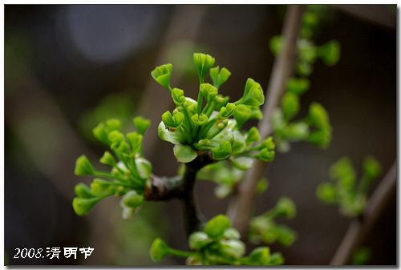
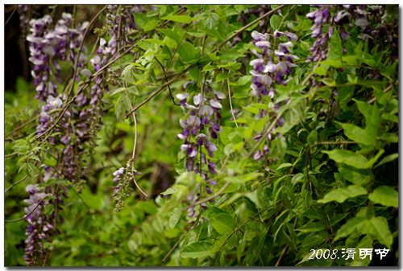
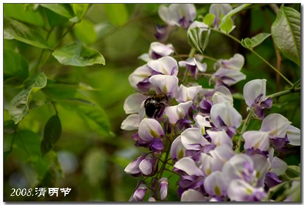
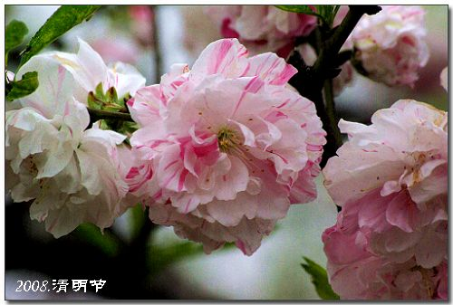
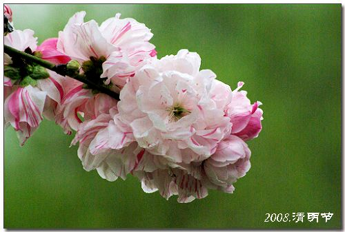
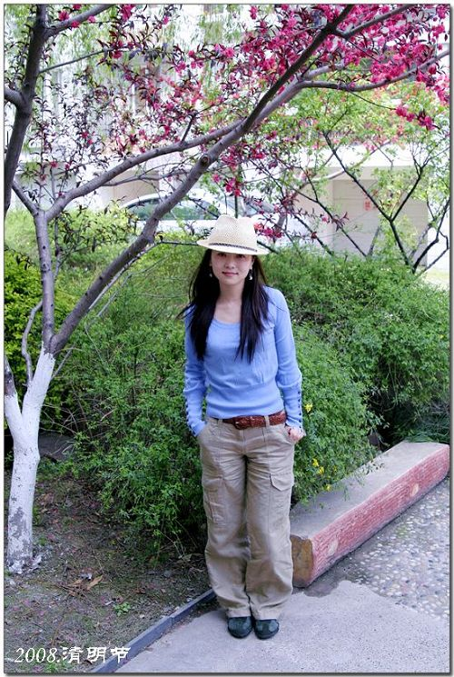
清明，和父母吃午饭。
有道菜是香椿炒鸡蛋，父母自己种的香椿，共三棵。常有人偷摘院子里的香椿叶，每每香椿叶成形时父母便摘回放在冰箱里储藏，积聚多了烧了吃。父母种的月季花，饱满鲜艳的花朵，晚上被人摘走三朵。院子里的乌龟孵出许多小乌龟，好多只趴在水池边晒太阳...父母的老年生活是我向往的。
母亲已有7、8年没有进过电影院，清明的下午和她去看电影《黄石的孩子》，买了爆米花和可乐。看到日本鬼子残杀中国平民时，母亲气愤的脱口而出：“狗东西”，引来旁人诧异的观望。（我看电影投入估计是遗传我母亲的）母亲触景生情边看边叙述外公和他的兄弟是两个极端，他们的父母及大多数亲戚在总统府工作。外公和一个弟弟是国民党，最小的弟弟却是地下党。母亲小时候随父母逃到绍兴，一两年后全家乘上那种运输货物的闷罐车准备逃往香港，半路上火车司机不见了，外公和另几个男人硬是坚持将火车开到了广州。外公先到九龙，后回来接应在广州的外婆、母亲和姨娘，可是那时已出不去了。外公穿军装的照片非常帅，抄家时全部没有了......
年纪大了的父母越来越象孩子。
收到短信一条：
清明节快到了，“如果你死后，墓志铭打算写点啥？”以下是一些回复：
1、一居室，求合租，价格面议。
2、我觉得我还可以抢救一下！
3、基因重组中，请梢后20年。
4、老子终于不用怕鬼了！
5、给爷笑一个，要不爷给你笑一个？
6、陪聊，提供夜间上门服务。
7、我从前是个胖子，现在和所有躺着的人一样有骨感。
8、曾经很黄很暴力，现在很黑很安静。
9、谢谢来访，改日登门回拜。
和几个同事跑去附近小区吃午餐，孕妇MM挺着圆圆的肚子说没吃饱。
1:00~1:30绕着公司的人工水池走了一圈，发现水池里有许多体型大小不一的鱼儿，园子里有很多绽放的花朵，这个园子真的很小家碧玉，小花小草小树，在一个既大又长、毫无生气的建筑旁边更加缺少了气魄。捡了几块扁扁的石头打水漂，想起小时侯在合肥的包公祠也这么玩着。思绪如这春日。
有的外地同事下午便回家了，这第一个放假的清明节，该如何计划？本来计划去婺源，有人说那边人挤人，比较怕。女友希望我去上海带TOBY、她带我，也许这样度过更休闲一些？因为少工作一天，周三、周四让人疲惫，下午眼睛有明显的酸涩感，我现在很喜欢窝在家里看碟子，偶尔到有大片植物的地方走走，会比较放松。过去每每放假的时候都会有情绪和精力计划一个或远或近的旅行，如今却没有那种劲头了，可能平时工作有点累？心态衰老？每天过得松散而随意？生活持续停留在一个音符上，未有波澜起伏但静谧且松弛，对许多人许多事不抱有理想主义的愿望，听从内心的声音，无论如何，很享受现在。
周日去奥体参加MAZDA 2试驾会，很喜欢两厢的外型，目前是1.3和1.5排量如果我没记错的话。内饰比较简单，后轮是鼓刹，可能出于降低成本考虑的。手动挡8万多，自动档10.13万。价格似乎偏高。
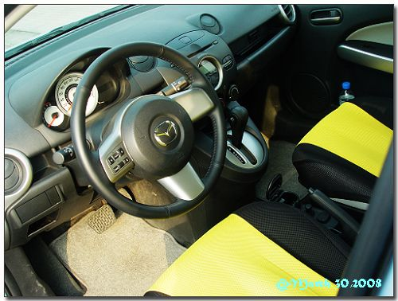
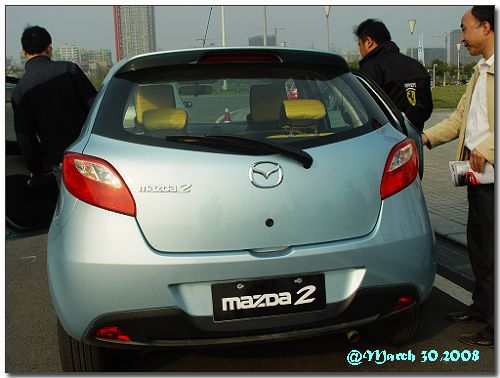


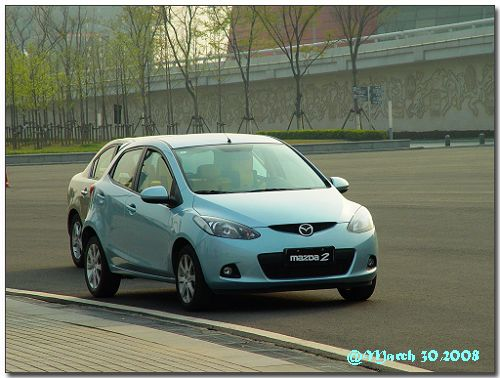
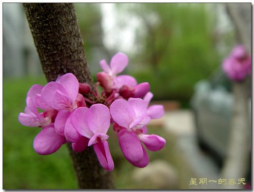
两位都是我的同事。
新娘子和华裔女明星刘玉玲长得很象，是位留英研究生。新郎与我同部门，自从有了这位新娘子，真有些“瓦尔特保卫萨拉热窝”的劲儿，好歹是人家第一次恋爱。祝福他们！
婚礼办的温馨而甜蜜，可我感觉不论哪场婚礼都有些小舞台剧的味道，下面的人边吃边看，上面的浓妆艳抹说着唱着朗诵皆流泪着....


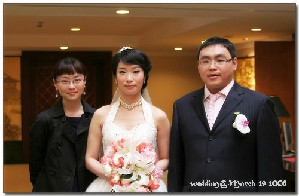
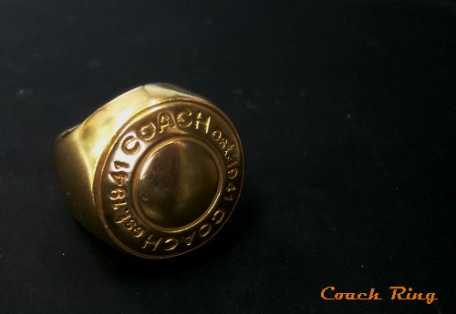
为什么这些在美国的中国人这么愤怒？我只能猜想两个原因：
第一，去美国的中国人起点比较高，多是读研究生后找到工作的，搞高技术的比较多，聚居在高技术高房价的地区的比较多。美国亚裔的中等收入已经超过白人，大部分在中上层。
第二，中国的教育太糟糕，培养的人自我中心，只根据自己的生活经验判断。看看现在国内，最富的人说要给富人免税，作家说要给作家免税。大家只看自己的生活和利益。这类人跑到外面也一样。我说的地方房子是偏便宜，但并不离谱。美国中等家庭收入将近五万，独居的中等价格已经落到二十万以下。这些人居然不读报纸！这是典型的中国教育娇惯出来的独生子：自以为是。
第三,去年我发表一篇文章,说美国大学文科助理教授的起薪,就五万上下,和当地公交司机差不多.只不过大学教授工作九个月,司机干一年.结果,许多海外留学生群起而攻之,说我骗人或者自己混得不好.后来有人用网上公开数据一一驳斥,他们才不说话了.其实,这些人大概是要忽悠国内人,抬高自己的身价.好回来找个百万员教授.或者在美国找不到工作,想回来捞一把,编出美国教授的高薪吓人.特提请大家警惕.
文章引用自： 薛涌-反智的书生
每次用香水，办公室坐我隔壁的大妈都直嚷嚷， 开始没觉得有什么，渐渐次数多了心里就纳闷。为这个我尽量用清淡的香水，在她嚷嚷的时候把办公室的窗户打开。
开始没觉得有什么，渐渐次数多了心里就纳闷。为这个我尽量用清淡的香水，在她嚷嚷的时候把办公室的窗户打开。
今早上我用的是CHANNEL的ALLURE，最淡的那种。我一边打开附近所有的窗户一边发短信问自己的女友： 我用香水是不是真的侵犯别人权利了？
我用香水是不是真的侵犯别人权利了？
女友回道：“叫她滚远点，去她妈的蛋！”
大妈每天上班持续地哼小调，声音虽小但蚊子般的嗡嗡声，还会随着别人的手机彩铃转换旋律...曾被别的同事投诉影响他人工作， 她还是照样坚持她的爱好。我从十几岁就开始用香水，这爱好侵犯别人权利了吗？
她还是照样坚持她的爱好。我从十几岁就开始用香水，这爱好侵犯别人权利了吗？ 哪天受不了“嚷嚷”没准儿真会河东狮吼滴！
哪天受不了“嚷嚷”没准儿真会河东狮吼滴！